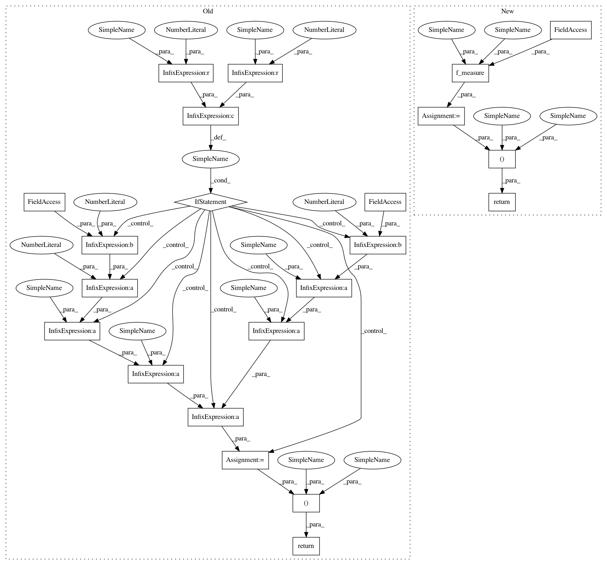

669c483c2089d80fabfcab3ba3a9eb61a6e52fcf,mir_eval/segment.py,,frame_clustering_nce,#,286
Before Change
S_under = 0.0
F = 0.0
if S_over > 0 or S_under > 0:
F = (1 + beta**2) * S_over * S_under / ((beta**2) * S_over + S_under)
return S_over, S_under, F
After Change
if n_true > 1:
score_under = 1. - true_given_pred / np.log2(n_true)
f_measure = util.f_measure(score_over, score_under, beta=beta)
return score_over, score_under, f_measure
In pattern: SUPERPATTERN
Frequency: 3
Non-data size: 22
Instances
Project Name: craffel/mir_eval
Commit Name: 669c483c2089d80fabfcab3ba3a9eb61a6e52fcf
Time: 2014-01-17
Author: brm2132@columbia.edu
File Name: mir_eval/segment.py
Class Name:
Method Name: frame_clustering_nce
Project Name: craffel/mir_eval
Commit Name: d114db1e8ef23b2b3ff1fb5d566f2c37b9ee3664
Time: 2014-01-17
Author: brm2132@columbia.edu
File Name: mir_eval/segment.py
Class Name:
Method Name: frame_clustering_pairwise
Project Name: craffel/mir_eval
Commit Name: 669c483c2089d80fabfcab3ba3a9eb61a6e52fcf
Time: 2014-01-17
Author: brm2132@columbia.edu
File Name: mir_eval/segment.py
Class Name:
Method Name: frame_clustering_nce
Project Name: craffel/mir_eval
Commit Name: d114db1e8ef23b2b3ff1fb5d566f2c37b9ee3664
Time: 2014-01-17
Author: brm2132@columbia.edu
File Name: mir_eval/segment.py
Class Name:
Method Name: boundary_detection